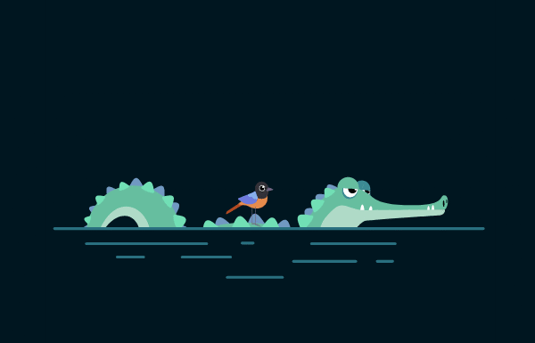

Aparición Fluida
Esta tarjeta entra en la pantalla desde abajo mientras su opacidad pasa de 0 a 1.

Esta tarjeta entra en la pantalla desde abajo mientras su opacidad pasa de 0 a 1.
Aplicando un animation-delay diferente a cada elemento, logramos un efecto de cascada.
Animar transform y opacity es la forma más eficiente para el navegador.